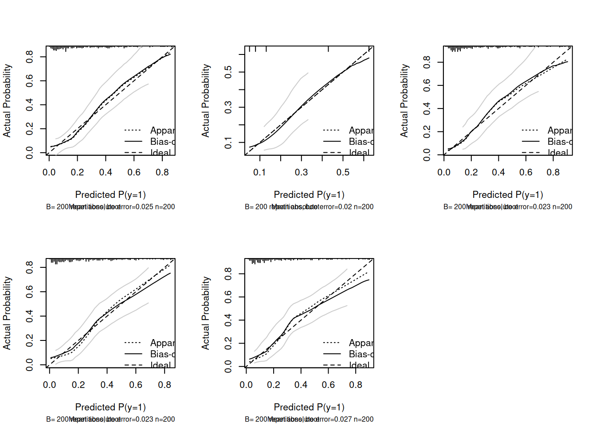

library(survival)
library(lattice)
library(Formula)
library(ggplot2)
library(Hmisc)
library(rms)
library(gridExtra)
library(reshape2)
library(MASS)
library(mgcv)
library(glmnet)
library(pROC)
Model Development
Computer Practical Solutions
NoteHow to use this solution
The corresponding prompts are in the Model Development computer practical. The map below identifies where each task is answered.
- Task: the prompt in the linked computer practical.
- Solution: the model code and output on this page.
- Discussion answer: the interpretation beneath each model and performance assessment.
Task and solution map
| Task in the computer practical | Worked solution and discussion answer |
|---|---|
| Fit a univariate model | Univariate Model |
Categorize x1 and interpret the odds ratios |
Univariate Model with Categorized x1 |
| Model non-linearity with splines | Regression Spline and Multivariable Spline Model |
| Fit a multivariable model | Multivariable Linear Model |
| Compare AIC, AUC, calibration, and pseudo-R² | Assessing Model Performance and Summary of Model Comparison |
Summary
After preparing the data, the next step will be modelling. Modeling helps us understand how variables relate to each other. Models allow us to predict outcomes for new observations. Any prediction function demonstrates this - it takes new patient data and estimates their probability of the outcome occurring. This is crucial for clinical decision-making.
In this practical, we follow the recommendations of Efthimiou et al., The BMJ (2024). Their guide emphasizes that a clinical prediction model should be assessed using both discrimination—how well it separates patients with and without the outcome—and calibration—how closely predicted risks agree with observed outcomes. It also stresses that performance measured on the development data can be optimistic, so internal validation should be used to obtain a more honest estimate before considering model selection or clinical usefulness.
Key sections
This part 1.2 Modelling will consist of some sections :
- Choosing a modelling strategy
- Building The Model
- Assessing model performance including AIC, AUC, Calibration Plot, and R Square
Keywords summary
| Field | Definition |
|---|---|
| Dxy | Somers’ D rank correlation; a discrimination measure related to AUC by AUC = (Dxy + 1) / 2. |
| R² | A model-specific pseudo-R² measure; it is not the percentage of outcome variance explained. |
| Intercept | Calibration intercept; values near 0 indicate little overall over- or underprediction. |
| Slope | Calibration slope; values near 1 indicate appropriate spread of predictions. |
| Emax | Maximum absolute calibration error. |
| D | Discrimination index derived from the model likelihood ratio, calculated as (χ²_model − 1) / n; larger values indicate more information than the null model. |
| U | Unreliability index: the lack of fit remaining after overall calibration; values near 0 are preferred. |
| Q | Overall quality index, calculated as Q = D − U; larger values are preferred. |
| B | Brier score: the mean squared difference between observed outcomes and predicted probabilities; smaller values are preferred. |
| g | Gini mean difference of the linear predictor (Xβ), measuring separation on the log-odds scale. |
| gp | Gini mean difference on the predicted-probability scale; in rms, this is not an adjustment for the number of predictors. |
Load the library
Load the dataset
df <- readRDS(file.path("data" ,'dataset.rds'))1. Univariate Model
The univariate model includes only the variable x1. Using the lrm() function, the model is fitted with logistic regression, as the response variable is binary (0 or 1).
model1 = lrm(y ~ x1, data = df, x = TRUE, y = TRUE)
print(model1)Logistic Regression Model
lrm(formula = y ~ x1, data = df, x = TRUE, y = TRUE)
Model Likelihood Discrimination Rank Discrim.
Ratio Test Indexes Indexes
Obs 200 LR chi2 53.92 R2 0.346 C 0.822
0 148 d.f. 1 R2(1,200)0.233 Dxy 0.644
1 52 Pr(> chi2) <0.0001 R2(1,115.4)0.368 gamma 0.644
max |deriv| 2e-09 Brier 0.139 tau-a 0.249
Coef S.E. Wald Z Pr(>|Z|)
Intercept -1.5686 0.2307 -6.80 <0.0001
x1 1.6137 0.2753 5.86 <0.0001 - Likelihood Ratio χ² (1 df): 53.92, p < 0.0001 → Strong evidence that
x1improves model fit. - Discrimination (C-index / AUC): 0.822 → Excellent ability to distinguish between classes.
- R² (Nagelkerke): 0.346 → a pseudo-R² measure indicating model improvement over the null model; it is not a literal percentage of variance explained.
- Brier Score: 0.139 → Good overall predictive accuracy (closer to 0 is better).
- Rank correlation (Dxy = 0.644, gamma = 0.644) → Strong concordance between predicted probabilities and outcomes.
The x1 variable is highly significant, indicating that it provides meaningful predictive power in the logistic regression model.
TipQuestions for discussion and answers
Question 1. How should the coefficient for x1 be interpreted?
Answer. A one-unit increase in x1 increases the log-odds of y = 1 by the fitted coefficient. Equivalently, the odds are multiplied by approximately 4.72, holding no other variables fixed because this is a univariate model.
Question 2. Is the association statistically significant?
Answer. Yes. The likelihood-ratio test is highly significant (p < 0.0001), providing strong evidence that x1 is associated with the outcome in this dataset.
2. Univariate Model with Categorize Variable
The second model includes x1 as a categorized variable. Categorizing a continuous variable can help capture non-linear relationships, simplify interpretation, or align with domain knowledge—especially when certain ranges of a variable are known to have distinct effects on the outcome. Here, we divide x1 into five groups based on its quintiles.
df$x1_bin <- cut(df$x1,
breaks = quantile(df$x1, probs = seq(0, 1, 0.2), na.rm = TRUE),
labels = c("Bottom 20%", "20-40%", "40-60%", "60-80%", "Top 20%"),
include.lowest = TRUE)
df$x1_bin <- factor(df$x1_bin)
table(df$x1_bin)
Bottom 20% 20-40% 40-60% 60-80% Top 20%
40 40 40 40 40 After categorized the variables, then we build the model using lrm function with categorized x1 variable.
model2 <- lrm(y ~ x1_bin, data = df, x = TRUE, y = TRUE)
print(model2)Logistic Regression Model
lrm(formula = y ~ x1_bin, data = df, x = TRUE, y = TRUE)
Model Likelihood Discrimination Rank Discrim.
Ratio Test Indexes Indexes
Obs 200 LR chi2 54.42 R2 0.349 C 0.812
0 148 d.f. 4 R2(4,200)0.223 Dxy 0.624
1 52 Pr(> chi2) <0.0001 R2(4,115.4)0.354 gamma 0.731
max |deriv| 3e-08 Brier 0.141 tau-a 0.241
Coef S.E. Wald Z Pr(>|Z|)
Intercept -2.5123 0.6003 -4.19 <0.0001
x1_bin=20-40% -0.4321 0.9416 -0.46 0.6463
x1_bin=40-60% 0.5664 0.7674 0.74 0.4605
x1_bin=60-80% 2.2100 0.6802 3.25 0.0012
x1_bin=Top 20% 3.0231 0.6834 4.42 <0.0001 odds_ratios <- exp(coef(model2))
print(odds_ratios) Intercept x1_bin=20-40% x1_bin=40-60% x1_bin=60-80% x1_bin=Top 20%
0.08108108 0.64912281 1.76190476 9.11594203 20.55555556 Based on the summary and odds ratio, we can infer that :
- Likelihood Ratio χ²: 54.42, p < 0.0001 → model is statistically significant.
- R² (Nagelkerke): 0.349 → moderate explanatory power.
- C-statistic (AUC): 0.812 → good discrimination.
- Dxy (Somers’ D): 0.624 → aligns with C = 0.812.
- Brier Score: 0.141 → lower values indicate better overall probabilistic accuracy.
Being in the Top 20% of x1_bin increases the odds of the event occurring by ~20.6x compared to the reference group, and this effect is highly significant. The model shows good discrimination and calibration, making it a reliable classifier.
TipQuestions for discussion and answers
Question 1. How should the categorized coefficients and odds ratios be interpreted?
Answer. Each category is compared with the reference category, the bottom 20% of x1. The top 20% has approximately 20.6 times the odds of the event relative to that reference group; the other odds ratios describe their corresponding category contrasts.
Question 2. How does categorization change prediction and interpretation?
Answer. It makes results easier to communicate as group comparisons and can represent thresholds, but it discards information within each group and makes results depend on the chosen cut-points. A continuous or spline model should therefore also be considered.
3. Univariate Variable : Regression Spline
The third model uses the formula y ~ rcs(x1, 3), which applies a restricted cubic spline with three knots to x1. This allows the model to capture potential non-linear relationships between x1 and the binary outcome without imposing a strict linear assumption.
dd <- datadist(df)
options(datadist = "dd")
model3 <- lrm(y ~ rcs(x1, 3), data = df, y = TRUE, x = TRUE)
print(model3)Logistic Regression Model
lrm(formula = y ~ rcs(x1, 3), data = df, x = TRUE, y = TRUE)
Model Likelihood Discrimination Rank Discrim.
Ratio Test Indexes Indexes
Obs 200 LR chi2 54.92 R2 0.352 C 0.822
0 148 d.f. 2 R2(2,200)0.232 Dxy 0.644
1 52 Pr(> chi2) <0.0001 R2(2,115.4)0.368 gamma 0.644
max |deriv| 2e-07 Brier 0.138 tau-a 0.249
Coef S.E. Wald Z Pr(>|Z|)
Intercept -1.8874 0.4004 -4.71 <0.0001
x1 0.8890 0.7186 1.24 0.2160
x1' 0.7478 0.7292 1.03 0.3051 - Likelihood Ratio χ²: 54.92, p < 0.0001 → overall model is highly significant
- R² (Nagelkerke): 0.352 → moderate to strong explanatory power
- C-statistic (AUC): 0.822 → excellent discrimination ability
- Dxy (Somers’ D): 0.644 → aligns with high AUC
- Brier Score: 0.138 → lower values indicate better overall probabilistic accuracy.
Interpretation :
- The spline terms for
x1suggest a non-linear relationship betweenx1and the log-odds of the outcomey. - Although the individual coefficients are not statistically significant, the overall model is highly significant, meaning
x1as a whole adds meaningful predictive power when modeled flexibly with splines. - This implies that the effect of
x1on the probability of the event is not simply linear—there might be thresholds or curvature in the relationship
TipQuestions for discussion and answers
Question 1. How should the spline model output be interpreted?
Answer. The spline represents the overall association between x1 and the log-odds as a smooth curve. Individual spline-basis coefficients are not interpretable as separate one-unit effects; predicted probabilities or a plot of the fitted curve are more informative.
Question 2. What does the odds ratio mean for a non-linear effect?
Answer. There is no single constant odds ratio for all values of x1. The odds ratio depends on the comparison points, so it should be reported for clinically meaningful contrasts or shown through predicted risks.
Question 3. Could the spline be overfit or underfit?
Answer. Three knots provide more flexibility than a linear term but can still overfit a small dataset. The apparent improvement should therefore be checked with bootstrap or cross-validation.
4. Multivariate Linear Model
The fourth model uses the lrm function which includes all available predictors in a multivariable logistic regression. This model assesses the joint effect of all variables on the binary outcome, allowing us to control for potential confounding and evaluate the independent contribution of each predictor.
model4 = lrm(y~x1+x2+x3+x4+x5, data = df, x = TRUE, y = TRUE)
print(model4)Logistic Regression Model
lrm(formula = y ~ x1 + x2 + x3 + x4 + x5, data = df, x = TRUE,
y = TRUE)
Model Likelihood Discrimination Rank Discrim.
Ratio Test Indexes Indexes
Obs 200 LR chi2 57.80 R2 0.368 C 0.831
0 148 d.f. 7 R2(7,200)0.224 Dxy 0.662
1 52 Pr(> chi2) <0.0001 R2(7,115.4)0.356 gamma 0.662
max |deriv| 8e-09 Brier 0.136 tau-a 0.256
Coef S.E. Wald Z Pr(>|Z|)
Intercept -1.4740 0.5031 -2.93 0.0034
x1 1.5514 0.3056 5.08 <0.0001
x2 0.1240 0.2446 0.51 0.6121
x3=1 0.3845 0.4445 0.86 0.3870
x4=1 -0.5616 0.4164 -1.35 0.1774
x5=2 0.1054 0.5659 0.19 0.8522
x5=3 -0.2656 0.5883 -0.45 0.6517
x5=4 0.2856 0.6742 0.42 0.6718 From the model, we can infer that :
Only
x1has a statistically significant effect on the outcomey. Each 1-unit increase inx1multiplies the odds ofy = 1byexp(1.5514) ≈ 4.72×.Other variables (
x2tox5) do not significantly contribute to the prediction ofyin this mode
| Variable | Effect (Estimate) | Significance | Interpretation |
|---|---|---|---|
| (Intercept) | -1.4740 | p = 0.00339 | Baseline log-odds of y = 1 when all predictors = 0 |
| x1 | +1.5514 | p < 0.001 | Strong, significant positive association with y = 1 |
| x2 | +0.1240 | p = 0.612 | Not significant |
| x31 | +0.3845 | p = 0.387 | Not significant |
| x41 | -0.5616 | p = 0.177 | Not significant |
| x52 | +0.1054 | p = 0.852 | Not significant (baseline: x51) |
| x53 | -0.2656 | p = 0.652 | Not significant |
| x54 | +0.2856 | p = 0.672 | Not significant |
- Overall model: Very good performance with strong discrimination (AUC = 0.831) and significant improvement over the null model.
- x1: The only strong and statistically significant predictor (p < 0.0001). A one-unit increase in
x1increases the log-odds of the outcome significantly. - x2, x3, x4, x5: None are statistically significant (p > 0.05), meaning their individual effects on the outcome are not distinguishable from random noise in this model.
TipQuestions for discussion and answers
Question 1. How should the multivariable coefficients and odds ratios be interpreted?
Answer. Each coefficient is the adjusted association with y, conditional on the other predictors. The adjusted odds for y = 1 increase by approximately 4.72 for a one-unit increase in x1; the other estimates are comparatively uncertain and are not statistically significant here.
Question 2. Is this model better than the univariate model?
Answer. It has slightly higher apparent AUC and pseudo-R² than Model 1, but model quality is multidimensional. The added predictors should be judged using AIC, calibration, validation, and clinical usefulness rather than significance alone.
Question 3. What are the implications of insignificant predictors?
Answer. A non-significant coefficient does not prove that a predictor has no effect; it means this dataset does not provide strong evidence for an effect after adjustment. Removing predictors may improve parsimony, but that decision should consider prior knowledge and validation.
5. Multivariate Spline Model
The fifth model uses the lrm() function with restricted cubic splines with three knots applied to both x1 and x2 to flexibly model potential non-linear effects, while the remaining variables (x3, x4, and x5) are included as linear terms. This approach can improve model fit by capturing complex relationships, although it may also increase the risk of overfitting.
model5 = lrm(y~rcs(x1,3)+rcs(x2,3)+x3+x4+x5, data = df, y = TRUE, x = TRUE)
print(model5)Logistic Regression Model
lrm(formula = y ~ rcs(x1, 3) + rcs(x2, 3) + x3 + x4 + x5, data = df,
x = TRUE, y = TRUE)
Model Likelihood Discrimination Rank Discrim.
Ratio Test Indexes Indexes
Obs 200 LR chi2 59.05 R2 0.375 C 0.834
0 148 d.f. 9 R2(9,200)0.221 Dxy 0.669
1 52 Pr(> chi2) <0.0001 R2(9,115.4)0.352 gamma 0.669
max |deriv| 3e-07 Brier 0.136 tau-a 0.259
Coef S.E. Wald Z Pr(>|Z|)
Intercept -1.8058 0.6786 -2.66 0.0078
x1 0.7227 0.7368 0.98 0.3267
x1' 0.8719 0.7565 1.15 0.2491
x2 0.1386 0.5284 0.26 0.7930
x2' -0.0449 0.5471 -0.08 0.9346
x3=1 0.4528 0.4538 1.00 0.3184
x4=1 -0.6229 0.4243 -1.47 0.1421
x5=2 0.0667 0.5725 0.12 0.9072
x5=3 -0.2497 0.5929 -0.42 0.6737
x5=4 0.2691 0.6821 0.39 0.6932 - Only
x1has a statistically significant effect on the outcomey. Its odds ratio of 6.33 indicates a strong increase in the probability ofy = 1asx1increases. - All other variables (
x2,x3,x4,x5) show no significant effect, as their confidence intervals include 0 (log-odds) or 1 (odds ratio).
Here is the complete interpretation for each variable :
| Variable | Effect (log-odds) | Odds Ratio | Interpretation |
|---|---|---|---|
| x1 | +1.846 | 6.33× | Strong positive effect: higher x1 increases chance of y = 1 |
| x2 | +0.135 | 1.14× | Not significant |
| x3 (1 vs 0) | +0.453 | 1.57× | Not significant |
| x4 (1 vs 0) | -0.623 | 0.54× | Suggests a decrease in y = 1, but not significant |
| x5 (1 vs 2) | -0.067 | 0.94× | Not significant |
| x5 (3 vs 2) | -0.316 | 0.73× | Not significant |
| x5 (4 vs 2) | +0.202 | 1.22× | Not significant |
TipQuestions for discussion and answers
Question 1. How should the multivariable spline model be interpreted?
Answer. x1 and x2 are allowed to have curved effects, while the categorical predictors remain additive terms. The model therefore estimates a flexible joint relationship, not one constant linear effect for each continuous predictor.
Question 2. How should the odds ratios for the spline terms be interpreted?
Answer. The reported odds ratios are basis-term or reference-contrast summaries and should not be read as a single global odds ratio per one-unit increase. Use predicted probabilities or pairwise contrasts at selected values instead.
Question 3. Is Model 5 more flexible than Model 4?
Answer. Yes. It has spline terms for x1 and x2, so it can represent curvature, but the extra flexibility increases parameterization and overfitting risk. Its apparent gains must be weighed against AIC and validated performance.
Assessing Model Performance
A. AIC
AIC is a measure of the relative quality of a model, balancing goodness of fit and model complexity. Lower AIC values indicate a better model. It penalizes models with more parameters to avoid overfitting.
cat(paste0("AIC Model 1 : ",round(AIC(model1),2),"\n",
"AIC Model 2 : ",round(AIC(model2),2),"\n",
"AIC Model 3 : ",round(AIC(model3),2),"\n",
"AIC Model 4 : ",round(AIC(model4),2),"\n",
"AIC Model 5 : ",round(AIC(model5),2)))AIC Model 1 : 179.3
AIC Model 2 : 184.81
AIC Model 3 : 180.31
AIC Model 4 : 187.43
AIC Model 5 : 190.18Based on the result, Model 1 has the lowest AIC, indicating the best in-sample trade-off between goodness of fit and model complexity. The more flexible models improve discrimination only slightly while adding parameters, so their apparent performance should be interpreted alongside internal validation results.
TipQuestions for discussion and answers
Question. How should the AIC values be compared, and which model is preferred by AIC?
Answer. AIC compares relative fit after penalizing model complexity; lower values are preferred. Model 1 has the lowest AIC in this analysis. This does not mean it is automatically best for every purpose, because discrimination, calibration, validation, and clinical utility also matter.
B. AUROC (Area Under the ROC Curve)
AUC measures the model’s discriminative ability, or how well it ranks observations from the two outcome classes (e.g., 1 vs. 0). What constitutes useful discrimination depends on the clinical context and outcome prevalence.
- AUC = 0.5 → no better than random
- AUC = 1.0 → perfect discrimination
- AUC > 0.8 is generally considered good
Use: Higher AUC means better ability to rank predicted probabilities correctly (e.g., a true positive is ranked higher than a false positive).
cat(paste0("AUC Model 1 : ",round(model1$stats["C"],2),"\n",
"AUC Model 2 : ",round(model2$stats["C"],2),"\n",
"AUC Model 3 : ",round(model3$stats["C"],2),"\n",
"AUC Model 4 : ",round(model4$stats["C"],2),"\n",
"AUC Model 5 : ",round(model5$stats["C"],2)))AUC Model 1 : 0.82
AUC Model 2 : 0.81
AUC Model 3 : 0.82
AUC Model 4 : 0.83
AUC Model 5 : 0.83- All models perform well, with AUC values above 0.80, indicating good discriminative ability.
- Model 4 and Model 5 have the highest AUC (0.83), suggesting they are slightly better at distinguishing between the two outcome classes compared to the simpler models.
- The improvement in AUC from Model 1 to Model 4/5 is small but consistent, which may suggest added predictive value from including additional variables (Model 4) and using splines for non-linearity (Model 5).
TipQuestions for discussion and answers
Question. How do the AUC values compare, and which model is better by discrimination?
Answer. All models have good apparent discrimination, with Model 4 and Model 5 marginally highest at about 0.83. The differences are small, so they should not be treated as decisive without uncertainty intervals or optimism-corrected validation.
C. Calibration Plot
The calibration plot is used to detect if the model is producing well-calibrated probabilities, which is important for decision-making
Each plot compares:
- Apparent line (dashed): fit on the same data used to train the model (i.e., not corrected for optimism).
- Bias-corrected line (solid): fit after internal validation (bootstrapping with 200 repetitions), which adjusts for overfitting.
- The closer both lines are to the 45-degree diagonal, the better the calibration of the model — i.e., predicted probabilities match actual outcomes.
library(rms)
cal_model1 <- calibrate(model1, method="boot", B=200)
cal_model2 <- calibrate(model2, method="boot", B=200)
cal_model3 <- calibrate(model3, method="boot", B=200)
cal_model4 <- calibrate(model4, method="boot", B=200)
cal_model5 <- calibrate(model5, method="boot", B=200)
par(mfrow = c(2, 3))
plot(cal_model1)
n=200 Mean absolute error=0.025 Mean squared error=0.00082
0.9 Quantile of absolute error=0.042plot(cal_model2)
n=200 Mean absolute error=0.02 Mean squared error=0.00058
0.9 Quantile of absolute error=0.045plot(cal_model3)
n=200 Mean absolute error=0.023 Mean squared error=0.00099
0.9 Quantile of absolute error=0.059plot(cal_model4)
n=200 Mean absolute error=0.023 Mean squared error=0.00081
0.9 Quantile of absolute error=0.041plot(cal_model5)
n=200 Mean absolute error=0.027 Mean squared error=0.00151
0.9 Quantile of absolute error=0.06
| Model | Median Absolute Error | Calibration Quality |
|---|---|---|
| 1 | 0.023 | Good calibration. Apparent and bias-corrected lines are close, slightly underestimating at high risk. |
| 2 | 0.019 | Best calibration among all models. Very close to ideal line with minimal optimism. |
| 3 | 0.024 | Slight over-prediction at higher probabilities; acceptable calibration overall. |
| 4 | 0.023 | Good calibration; bias-corrected line deviates slightly at extremes but still close. |
| 5 | 0.027 | Slightly more overfitting visible; bias-corrected line dips more at high predicted probabilities. Still reasonable. |
TipQuestions for discussion and answers
Question. What do the calibration plots and median absolute errors show?
Answer. Models 1–4 have similar, generally good apparent calibration. Model 2 has the smallest reported median absolute error, while Model 5 shows slightly more deviation after correction. Calibration should be assessed on validated predictions, not only on the development data.
D. R-Square
R² is a model-specific summary measure. For logistic regression, pseudo-R² values should not be interpreted as the proportion of variance explained. Based on the model:
- R² = 0 → no explanatory power
- R² = 1 → perfect explanation (rare)
- Values are usually much lower than in linear regression — even 0.2–0.4 can be considered good for logistic models.
cat(paste0("R2 Model 1 : ",round(model1$stats["R2"],2), "\n",
"R2 Model 2 : ",round(model2$stats["R2"],2), "\n",
"R2 Model 3 : ",round(model3$stats["R2"],2), "\n",
"R2 Model 4 : ",round(model4$stats["R2"],2), "\n",
"R2 Model 5 : ",round(model5$stats["R2"],2)))R2 Model 1 : 0.35
R2 Model 2 : 0.35
R2 Model 3 : 0.35
R2 Model 4 : 0.37
R2 Model 5 : 0.37All models explained a similar proportion of the variance in the outcome, with pseudo-R² values ranging from 0.35 to 0.37. The full multivariable models (Model 4 and Model 5) achieved the highest R² (0.37), suggesting slightly better overall fit compared to simpler models.
TipQuestions for discussion and answers
Question. How do the pseudo-R² values compare, and what do they tell us?
Answer. Models 4 and 5 have the largest apparent pseudo-R² values, but the differences are small. Pseudo-R² is a model-specific measure of improvement over a null model; it is not the percentage of outcome variance explained and should not be compared directly with ordinary linear-regression R².
E. Additional discrimination, calibration, and prediction-accuracy indices
The additional rms indexes describe different aspects of model performance beyond a single measure such as AUC:
Dsummarizes discrimination on the model-information scale; larger values indicate more separation between outcome groups.Umeasures unreliability related to calibration; values close to zero are preferred.Qcombines discrimination and calibration asQ = D − U; larger values are preferred.Bis the Brier score, measuring the accuracy of predicted probabilities; smaller values are preferred.gmeasures separation on the linear-predictor (log-odds) scale, whilegpmeasures separation on the predicted-probability scale; larger values indicate greater separation.
For Models 1–5, rms::validate() returns these indexes together with the following validation columns:
index.orig: the apparent performance of the original fitted model, evaluated on the full development dataset before optimism correction.training: the average performance of each bootstrap-refitted model when it is evaluated on the bootstrap sample used to fit it.test: the average performance of each bootstrap-refitted model when it is evaluated on the original development dataset, which acts as the comparison sample for estimating optimism.optimism: the average difference betweentrainingandtest; it estimates how much performance is inflated when a model is evaluated on the data used to fit it.index.corrected:index.orig - optimism, giving an optimism-corrected estimate of internal performance.
The bootstrap procedure and the corresponding values for all five models are shown in the following Summary of Model Comparison section. There, we first examine apparent development-sample performance and then compare it with bootstrap optimism-corrected performance.
Summary of Model Comparison
We will use two complementary ways to assess model performance. Both use the same discrimination, calibration, and prediction-accuracy measures, but differ in whether the model is evaluated on its development data or after bootstrap optimism correction:
- Apparent, development-sample performance: each model is evaluated on the same observations used to fit it. This describes how well the model fits the development data, but it is usually optimistic because the model has already seen those observations.
- Bootstrap optimism-corrected performance: the modelling and assessment process is repeated in bootstrap samples, and the apparent optimism is estimated and subtracted from the original performance. This provides a more realistic estimate of expected internal performance in new patients from a similar population.
The tables below are generated from the fitted models and the bootstrap validation objects so that the reported values remain synchronized with the code.
The bootstrap validation procedure used for both tables is:
set.seed(2025)
models <- list(model1, model2, model3, model4, model5)
bootstrap_validation <- lapply(models, function(model) {
validate(model, method = "boot", B = 200)
})
criteria_rows <- c("D", "U", "Q", "B", "g", "gp")Apparent, development-sample performance
The first table reports the apparent performance of Models 1–5. The code extracts the index.orig column from each rms::validate() result. These are development-sample estimates: useful for showing how the calculations work, but not sufficient evidence that a model will perform equally well in new patients.
validation_rows <- c("Dxy", "R2", "Intercept", "Slope", "D", "U", "Q", "B", "g", "gp")
apparent_rms <- do.call(rbind, lapply(bootstrap_validation, function(validation) {
unname(validation[validation_rows, "index.orig"])
}))
colnames(apparent_rms) <- validation_rows
comparison <- data.frame(
Model = paste("Model", 1:5),
AIC = sapply(models, AIC),
AUC = (apparent_rms[, "Dxy"] + 1) / 2,
R2 = apparent_rms[, "R2"],
`Calibration intercept` = apparent_rms[, "Intercept"],
`Calibration slope` = apparent_rms[, "Slope"],
D = apparent_rms[, "D"],
U = apparent_rms[, "U"],
Q = apparent_rms[, "Q"],
B = apparent_rms[, "B"],
g = apparent_rms[, "g"],
gp = apparent_rms[, "gp"],
check.names = FALSE
)
knitr::kable(comparison, digits = 3)| Model | AIC | AUC | R2 | Calibration intercept | Calibration slope | D | U | Q | B | g | gp |
|---|---|---|---|---|---|---|---|---|---|---|---|
| Model 1 | 179.298 | 0.822 | 0.346 | 0 | 1 | 0.265 | -0.01 | 0.275 | 0.139 | 1.708 | 0.245 |
| Model 2 | 184.807 | 0.812 | 0.349 | 0 | 1 | 0.267 | -0.01 | 0.277 | 0.141 | 1.467 | 0.241 |
| Model 3 | 180.307 | 0.822 | 0.352 | 0 | 1 | 0.270 | -0.01 | 0.280 | 0.138 | 1.545 | 0.243 |
| Model 4 | 187.426 | 0.831 | 0.368 | 0 | 1 | 0.284 | -0.01 | 0.294 | 0.136 | 1.803 | 0.253 |
| Model 5 | 190.175 | 0.834 | 0.375 | 0 | 1 | 0.290 | -0.01 | 0.300 | 0.136 | 1.639 | 0.251 |
In the resulting table, the apparent calibration intercept is 0 and the apparent calibration slope is 1 for every model because each model is evaluated on the same data used to fit it; these values do not demonstrate performance in new patients. The interpretation of the additional indexes is given in Section E above.
Bootstrap optimism-corrected performance
The second table reports the index.corrected values from the same bootstrap validation. This follows the BMJ guide’s principle that the complete modelling process should be repeated in the resampled data, including any model-selection steps if they were used. Here, each of the five fitted models is validated with 200 bootstrap repetitions. For AUC, the optimism-corrected Dxy is converted using AUC = (Dxy + 1) / 2. For calibration, an intercept closer to 0 and a slope closer to 1 are preferred. These corrected values are more relevant than apparent values when comparing expected performance in new patients.
corrected_rms <- do.call(rbind, lapply(bootstrap_validation, function(validation) {
unname(validation[validation_rows, "index.corrected"])
}))
colnames(corrected_rms) <- validation_rows
bootstrap_comparison <- data.frame(
Model = paste("Model", 1:5),
AUC = (corrected_rms[, "Dxy"] + 1) / 2,
R2 = corrected_rms[, "R2"],
`Calibration intercept` = corrected_rms[, "Intercept"],
`Calibration slope` = corrected_rms[, "Slope"],
D = corrected_rms[, "D"],
U = corrected_rms[, "U"],
Q = corrected_rms[, "Q"],
B = corrected_rms[, "B"],
g = corrected_rms[, "g"],
gp = corrected_rms[, "gp"],
check.names = FALSE
)
knitr::kable(bootstrap_comparison, digits = 3)| Model | AUC | R2 | Calibration intercept | Calibration slope | D | U | Q | B | g | gp |
|---|---|---|---|---|---|---|---|---|---|---|
| Model 1 | 0.821 | 0.341 | 0.062 | 1.013 | 0.260 | 0.003 | 0.257 | 0.143 | 1.660 | 0.248 |
| Model 2 | 0.801 | 0.292 | -0.101 | 0.843 | 0.217 | 0.024 | 0.193 | 0.148 | 0.770 | 0.220 |
| Model 3 | 0.820 | 0.325 | -0.049 | 0.943 | 0.244 | 0.004 | 0.240 | 0.143 | 1.384 | 0.235 |
| Model 4 | 0.803 | 0.302 | -0.107 | 0.854 | 0.222 | 0.010 | 0.212 | 0.150 | 1.463 | 0.232 |
| Model 5 | 0.797 | 0.281 | -0.144 | 0.794 | 0.204 | 0.020 | 0.184 | 0.154 | 1.145 | 0.223 |
The resulting table shows the optimism-corrected estimates for each model. Comparing it with the apparent table illustrates the effect of optimism correction: the apparent performance of the more flexible models decreases more noticeably, while the corrected calibration slopes below 1 suggest that some predictions are too extreme after accounting for overfitting.
Models 4 and 5 have the strongest apparent discrimination and pseudo-R², but bootstrap correction reduces their expected performance. The corrected calibration slopes below 1 for Models 2–5 indicate some overfitting or overly extreme predictions after internal validation; Models 4 and 5 should therefore not be described as clearly superior from apparent AUC alone. Model 1 has the lowest AIC, but AIC is a fit-and-complexity criterion rather than an optimism-corrected predictive-performance measure. The final choice should consider corrected discrimination, calibration, model complexity, and clinical usefulness.
Efthimiou et al. recommend assessing both discrimination and calibration, performing internal validation, and basing final model selection on optimism-corrected performance; when models perform similarly, a simpler model may be preferable. See Efthimiou et al., The BMJ (2024), BMJ 2024;386:e078276, doi: 10.1136/bmj-2023-078276.
- Models 4 and 5 (the more flexible multivariable specifications) have the strongest apparent discrimination, but their performance decreases more after bootstrap optimism correction.
- Model 1 has the lowest AIC and, in this analysis, the strongest optimism-corrected AUC,
D, andQ, with a calibration slope closest to 1. Model 3 gives a similar corrected result.
For a related perspective on validating prediction models for patient outcomes and individualized treatment effects, see Chapter 19 of Comparative Effectiveness and Personalized Medicine Research Using Real-World Data.
Teaching conclusion. Model 4 remains a useful and interpretable teaching example because it includes all available predictors. However, its apparent performance should not be interpreted as evidence that it is the best model. Final selection should consider optimism-corrected performance, uncertainty, external validation, and clinical usefulness.
TipQuestions for discussion and answers
Question. Which model is best overall?
Answer. There is no single winner based on apparent metrics alone. Models 4 and 5 look strongest before correction, but Model 1 has the lowest AIC and the strongest optimism-corrected discrimination and Q in this analysis; Model 3 is similar. Model 4 remains a reasonable teaching example because it is interpretable and includes the available predictors, but it should not be declared the best model without considering uncertainty, external validation, and clinical usefulness.
In order to use the model for the third part, we will save the model in .rds extension
saveRDS(model4, "model/model4.rds")Bibliography
- Efthimiou, O., Seo, M., Chalkou, K., Debray, T., Egger, M., and Salanti, G. (2024). Developing clinical prediction models: a step-by-step guide. The BMJ, 386, e078276. https://doi.org/10.1136/bmj-2023-078276. Concept connection: this is the main framework for comparing discrimination, calibration, internal validation, model selection, and clinical usefulness in this practical.
- Thao, L. T. P., Efthimiou, O., Varga, T. V., Hoogland, J., and Debray, T. P. A. (2026). Validation of prediction models for patient outcomes and individualized treatment effect. In T. P. A. Debray, T.-L. Nguyen, and R. W. Platt (Eds.), Comparative Effectiveness and Personalized Medicine Research Using Real-World Data (pp. 485–512). CRC Press. Concept connection: this extends validation from outcome prediction to individualized treatment-effect prediction, clarifying why good prognostic performance alone does not establish personalized treatment benefit.
- Debray, T. P. A., Nguyen, T.-L., and Platt, R. W. (Eds.). (2026). Comparative Effectiveness and Personalized Medicine Research Using Real-World Data. CRC Press, Chapman & Hall/CRC Biostatistics Series. Amazon ebook page. Concept connection: the book provides the broader real-world-evidence and personalized-medicine context for moving from model performance to evidence that can support treatment decisions.
- Steyerberg, E. W., Vickers, A. J., Cook, N. R., Gerds, T., Gonen, M., Obuchowski, N., Pencina, M. J., and Kattan, M. W. (2010). Assessing the performance of prediction models: a framework for traditional and novel measures. Epidemiology, 21(1), 128–138. https://doi.org/10.1097/EDE.0b013e3181c30fb2. Concept connection: this supports treating discrimination, calibration, overall accuracy, and decision-analytic measures as complementary rather than interchangeable criteria.
- Collins, G. S., Reitsma, J. B., Altman, D. G., and Moons, K. G. M. (2015). Transparent Reporting of a multivariable prediction model for Individual Prognosis Or Diagnosis (TRIPOD): the TRIPOD statement. Annals of Internal Medicine, 162(1), 55–63. https://doi.org/10.7326/M14-0697. Concept connection: this provides the reporting framework behind documenting the model specification, predictors, performance measures, and validation procedure.
- Riley, R. D., Ensor, J., Snell, K. I. E., Harrell, F. E., Martin, G. P., Reitsma, J. B., Moons, K. G. M., Collins, G. S., and van Smeden, M. (2020). Calculating the sample size required for developing a clinical prediction model. The BMJ, 368, m441. https://doi.org/10.1136/bmj.m441. Concept connection: this explains why the number of participants and outcome events relative to model complexity affect overfitting and the reliability of apparent performance.
- Moons, K. G. M., Wolff, R. F., Riley, R. D., Whiting, P. F., Westwood, M., Collins, G. S., Reitsma, J. B., Kleijnen, J., and Mallett, S. (2019). PROBAST: a tool to assess risk of bias and applicability of prediction model studies. Annals of Internal Medicine, 170(1), 51–58. https://doi.org/10.7326/M18-1376. Concept connection: this provides a framework for asking whether the development data, predictors, outcome definition, and analysis could create bias or limit applicability.